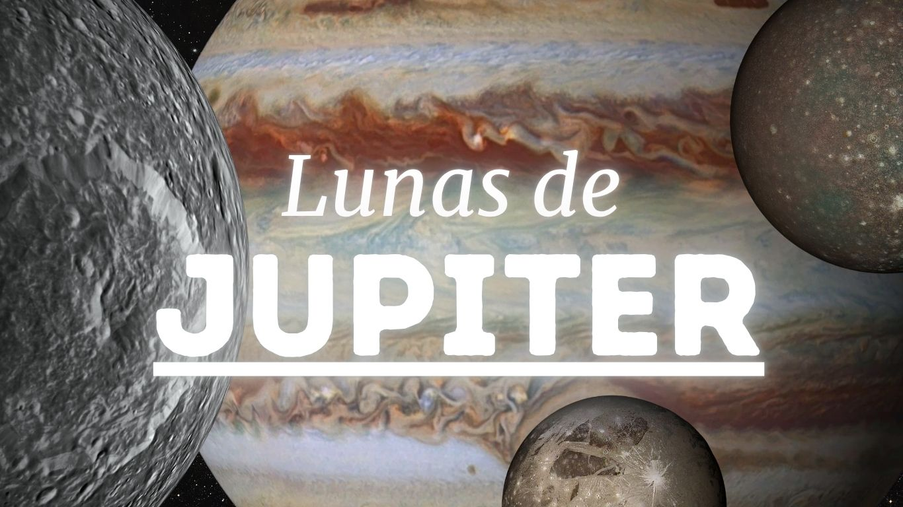

.png)
|
|

A mayo de 2026, se han confirmado 115 lunas de Júpiter. El número sigue aumentando a medida que los astrónomos estudian el sistema joviano con más detalle; y eso ni siquiera incluye los pequeños satélites de apenas unos metros que orbitan el planeta. La mayoría de las lunas de Júpiter son pequeñas, miden menos de 10 kilómetros de diámetro y fueron descubiertas a finales del siglo XX y principios del XXI. Sin embargo, las lunas jovianas más grandes fueron observadas ya en el siglo XVII con un telescopio casero. Fueron las primeras lunas de Júpiter descubiertas. En orden descendente de tamaño, son Ganímedes, Calisto, Ío y Europa.
Las cuatro lunas más grandes de Júpiter fueron descubiertas en 1610 por el astrónomo italiano Galileo Galilei; por eso también se llaman lunas galileanas. Al principio, su telescopio no podía resolver claramente Ío y Europa como objetos separados, por lo que vio solo tres objetos en lugar de cuatro. Además, los confundió con estrellas fijas. Solo más tarde notó que no permanecían inmóviles, sino que orbitaban Júpiter.